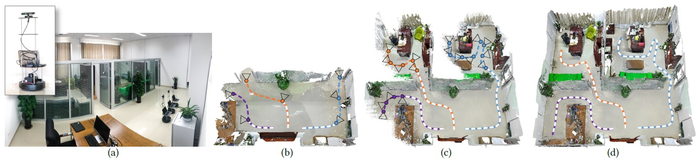
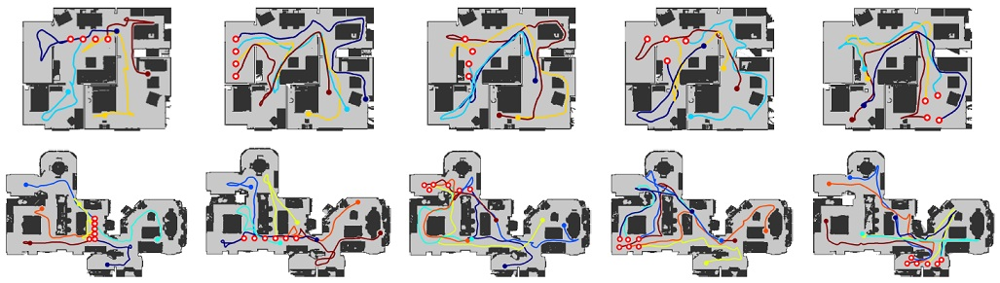
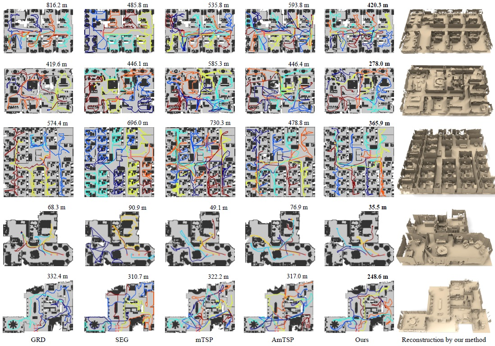
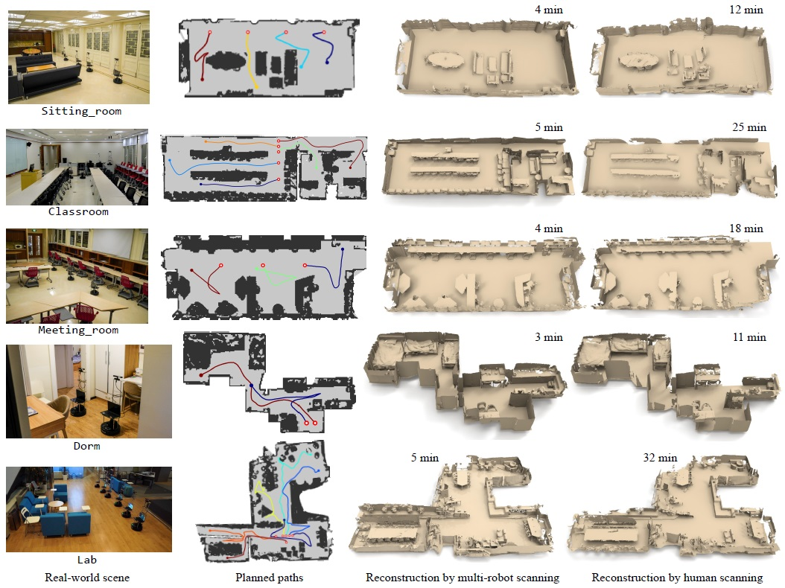

Multi-Robot Collaborative Dense Scene Reconstruction
Siyan Dong, Kai Xu*,
Qiang Zhou, Andrea Tagliasacchi, Shiqing Xin, Matthias Nießner, Baoquan Chen*
(* Kai Xu and Baoquan Chen are corresponding authors)
ACM Transactions
on Graphics (SIGGRAPH 2019), 38(4)

We introduce an algorithm for multi-robot collaborative dense reconstruction of unknown indoor scenes (a). Given the partially scanned scene, we
extract a set of task view points based on the uncertainty in the current reconstruction and assign them to the robots (b-c). The task assignment is formulated
as an Optimal Mass Transport (OMT). For each robot, a smooth movement path is planned based on the tasks assigned to it. Our algorithm enables the robots
to efficiently coordinate with each other, evenly distribute their scanning effort, and efficiently achieve a full coverage and high-quality reconstruction (d).
|
Abstract
|
We present an autonomous scanning approach which allows multiple robots
to perform collaborative scanning for dense 3D reconstruction of unknown
indoor scenes. Our method plans scanning paths for several robots, allowing
them to efficiently coordinate with each other such that the collective scanning
coverage and reconstruction quality is maximized while the overall
scanning effort is minimized. To this end, we define the problem as a dynamic
task assignment and introduce a novel formulation based on Optimal
Mass Transport (OMT). Given the currently scanned scene, a set of task
views are extracted to cover scene regions which are either unknown or uncertain. These task views are assigned to the robots based on the OMT optimization.
We then compute for each robot a smooth path over its assigned
tasks by solving an approximate traveling salesman problem. In order to
showcase our algorithm, we implement a multi-robot auto-scanning system.
Since our method is computationally efficient, we can easily run it in real
time on commodity hardware, and combine it with online RGB-D reconstruction
approaches. In our results, we show several real-world examples
of large indoor environments; in addition, we build a benchmark with a
series of carefully designed metrics for quantitatively evaluating multi-robot
autoscanning. Overall, we are able to demonstrate high-quality scanning
results with respect to reconstruction quality and scanning efficiency, which
significantly outperforms existing multi-robot exploration systems.
|
|
|
Paper |
|
|
|
Slides |
|
|
|
Video |
|
|
|
| Images |

Scanning paths planned by our OMT-based algorithm on a SunCG scene (top) and a Matterport3D scene (bottom), for four and six robots, respectively,
with different initializations. The starting points of robots are depicted with red circles. Notice the exploration behavior of our solution is visually consistent.

A visual comparison of path planning for synthetic scene scanning over 5 benchmark scenes (3 SUNCG scenes and 2 Matterport3D scenes). For each
scene (row), our result is compared to those by four alternatives including GRD (Greedy), SEG (Segmentation-based), mTSP (Multi-TSP) and AmTSP (Approximate mTSP). The total traverse distance of all robots is given to the
top-right corner of each planning result, for achieving a completeness level of 83%. The final reconstruction results by our method are shown in the last column.

A gallery of real-world scene scanning examples. In each row, we show from left to right a bird-eye view picture of the indoor scene, the online
planned multi-robot scanning paths, the reconstruction result obtained by our multi-robot system, and the reconstruction by human scanning. Scanning time
is provided for both autonomous and manual scanning. Our system achieves more complete reconstruction with much less scanning time.
|
|
|
| Thanks |
We thank the anonymous reviewers for their valuable comments.
This work was supported by the National 973 Program (2015CB352501).
|
|
|
Code
Data |
The source code will be release on ROS.
The benchmark dataset will be released soon.
|
|
|
| Bibtex |
@article
{dong_multirobot_sig19,
title = {Multi-Robot Collaborative Dense Scene Reconstruction},
author
= {Siyan Dong and Kai Xu and Qiang Zhou and Andrea Tagliasacchi and Shiqing Xin and Matthias Nießner and Baoquan Chen},
journal
= {ACM Transactions on Graphics},
volume
= {38},
number
= {4},
pages
= {Article 84},
year
= {2019}
}
|
 
|